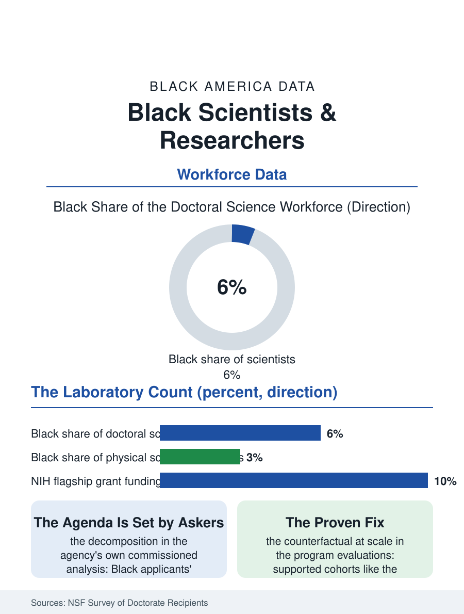

Black Employment
The Questions Asked: Black Scientists and Researchers
Six percent of the doctoral science workforce, a grant gap the agency itself decomposed, and an agenda shaped by who is in the room to ask. The scientists file.

Black scientists staff the nation's laboratories at roughly half their population share of the research workforce, with the distribution by field, life sciences fuller, physical sciences and mathematics thinnest, and by rank, the senior investigator and the academy memberships thinnest of all, that the National Science Foundation's workforce census has documented across its decades of surveys. This article reads the scientists file.
The Doctorate's Funnel
The NSF's Survey of Doctorate Recipients composes the file's spine: Black scientists constitute on the order of five to six percent of the doctoral science and engineering workforce, a share built from a bachelor's pipeline whose leaks the education file maps at every joint, and the share thins by subfield in a pattern that follows the mathematics gate, the physical sciences and engineering posting the lowest Black shares and the life and social sciences, where the health and behavior questions of the community itself recruit, the highest. The federal laboratory workforce, the NIH's intramural program, the national laboratories, and the agency science staffs, employs a Black scientific corps of real weight, the public sector pattern of the other files repeating in the laboratory coat, while the industrial research workforce, the pharmaceutical and technology laboratories, posts the private sector's thinner numbers. The postdoctoral tier is the file's bottleneck of record: the postdoc's economics, years at stipend wages in the high-cost laboratory cities, filter by the wealth file at the exact career stage where the faculty and senior staff competitions are seeded, and the attrition studies find the Black postdoc's exit rate into the adjacent professions, the policy, the industry, the science administration where the Black scientific workforce is fuller, exceeding the white cohort's, a sorting the file counts as loss and the adjacent fields count as their own gain.
Grants, Credit, and the Review Room
The research funding file is the scientists' version of the credit file: the NIH's grant success data, exposed in the landmark analysis that the agency itself commissioned, showed Black applicants' funding rates trailing white applicants' by a wide margin at the flagship grant level, a gap the subsequent analyses decomposed into topic choice, the community-engaged and disparity-focused research the Black scientists disproportionately propose scoring worse in the review rooms, institution, and the cumulative advantage of the funded, a decomposition that converted the finding from an accusation into a design problem the agency has spent a decade addressing with structural experiments. The publication and citation files adjoin: the citation gap studies find the Black scientist's work cited below its venue's expectation, the credit economy's version of the same distribution, with the mentorship and sponsorship networks, the invisible college whose membership allocates both, reproducing the room's composition. The professional societies and the Black scientific organizations, from the century-old technical associations to the current era's viral roll calls of Black scientists by field, function as the counter-networks, their conferences and their directories the field's parallel infrastructure.
The Questions Asked
The scientists file closes on the epistemic stakes, because a laboratory workforce's composition shapes the questions the nation's science asks: the research agenda's attention to the sickle cell file's disease, to the environmental exposures of the fence-line files, to the materials and the algorithms' behavior on the whole population, tracks the presence in the room of the scientists for whom those are not abstractions, the funding decomposition's topic finding being the system's own confession that the agenda is set by the askers. The pipeline programs' evidence, the Meyerhoff model and its replications, demonstrates the counterfactual at scale: selected and supported cohorts of Black science students complete the doctorate at rates that lead the national data, the file's proof that the funnel's leaks are engineering failures with known fixes rather than the talent's distribution. The NSF counts the doctoral workforce each cycle, and the trend, slow and positive at the intake, negative at the senior attrition, describes a workforce being built and drained simultaneously. The file's last entry is the laboratory's own standard applied to itself: the experiment whose sample excludes the population is underpowered by design, and American science, in the census of its own doctorate holders, has been running the underpowered design on its talent pool for a century, and publishing, in the questions unasked, the results.
More in Black Employment
The Black Unemployment Rate: The Two-to-One Pattern
Black unemployment runs at roughly twice the White rate — 5.5 percent against 3.3 percent in annual averages — a ratio stable across five decades of federal data. How it is measured and why it persists.
Black Median Weekly Earnings: The 80-Cent Ratio
Black full-time workers earn a median of about $900 a week — roughly 80 cents for every dollar White workers earn. The BLS earnings data by group, gender, and occupation.
Black Labor Force Participation: Working at National Rates
Black labor force participation runs at roughly the national rate — and Black women participate at higher rates than White women. The BLS participation data.
Source: National Science Foundation, Survey of Doctorate Recipients and Science and Engineering Indicators; National Institutes of Health grant outcome analyses.